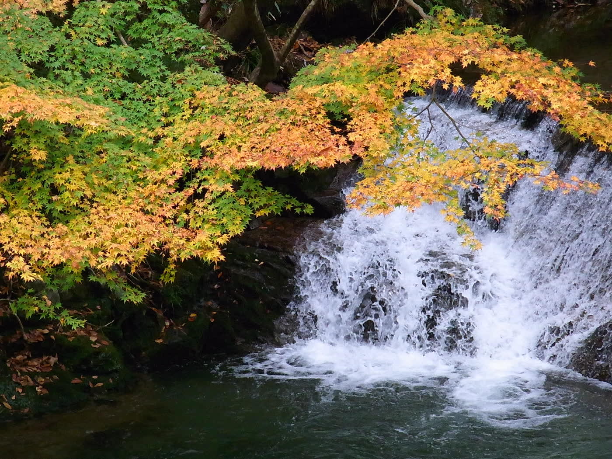

花贯溪谷 · 2009 年 11 月 20 日 · 江戸村のとくぞう · CC BY-SA 4.0
DAY 1 · 11/15 SUN吊桥 · 溪谷The bridge · a gorge
东京 → 龙神大吊桥 → 花贯溪谷 → 五浦海岸
Tokyo → Ryūjin Bridge → Hananuki Gorge → the Izura coast
第 1 天 · 周日 · 约 150 km · 开车最多的一天
Day 1 · Sunday · about 150 km · the longest drive
行程
Plan
- 9:30 从东京出发，走常磐道到那珂 IC，中途在守谷 SA 或友部 SA 休息一次，给孕妇和小朋友上洗手间。
- 约 11:30 到龙神大吊桥：长 375 m、离水面约 100 m 的步行吊桥，桥面平坦，婴儿车可以推上去，来回约 40 分钟。开放 8:30–17:00（16:40 停止入场），每天开放，大人 ¥320、中小学生 ¥210，3 岁免费。大风、打雷时会限制通行。
- 周日 + 红叶节（往年 11/1–30），中午是人最多的时候，停车可能要排队。不想排队可以先吃午饭，14:00 以后再上桥，光线也更柔和。
- 约 14:00 去花贯溪谷（约 50 分钟，正好在去五浦的路上）：往年 11 月中下旬最好，红叶节期间停车 ¥1,000，周末拥堵。从停车场走到汐见滝吊桥是平缓的溪边路；吊桥约 60 m、会晃，孕妇扶好扶手，不想走就在桥头看。待 40 分钟左右就够。累了就跳过，直接开去酒店。
- 16:00–16:30 到五浦観光ホテル，趁天还亮看看海、泡悬崖露天浴池（五浦面朝东，看的是第二天早上的日出）。
- Leave Tokyo at 9:30 on the Jōban Expressway to Naka IC, with one stop at Moriya or Tomobe service area for the toilets.
- Reach Ryūjin Bridge around 11:30: a 375 m footbridge about 100 m above the water. The deck is flat and fine for a pushchair; allow 40 minutes there and back. Open 8:30–17:00 (last entry 16:40) every day; ¥320 adults, ¥210 school-age children, free for a three-year-old. It closes to walkers in strong wind or thunder.
- A Sunday during the foliage festival (usually 1–30 Nov) means midday is the busiest time and the car park may queue. You can eat first and walk the bridge after 14:00, when the light is softer too.
- Around 14:00, Hananuki Gorge (about 50 minutes, on the way to Izura): usually best mid-to-late November; parking ¥1,000 during the festival, and weekends get jammed. The riverside path from the car park to the Shiomi-taki suspension bridge is gentle; the 60 m bridge sways, so the pregnant traveller should hold the rail — or just look from the end. Forty minutes is plenty. If anyone's tired, skip it and drive straight to the hotel.
- Reach the Itsuura Kankō Hotel around 16:00–16:30 to see the sea while it's light and soak in the clifftop bath (Izura faces east — the show is tomorrow's sunrise).
🍽 餐厅
🍽 Eating
- 午：常陆太田是“常陆秋荞麦”的产地，吊桥附近有手打荞麦店（如慈久庵），营业日不固定，出发前确认；也可以在吊桥旁的小卖店简单吃点
- 晚：旅馆晚餐，订房时说明孕妇不吃生食（住五浦的话海鲜多，生鱼片请换成熟食）
- Lunch: Hitachi-Ōta grows the prized Hitachi Aki soba buckwheat; there are hand-made soba places near the bridge (Jikuan, for one) with irregular opening days — check before you go. Or a quick bite at the stalls by the bridge.
- Dinner: at the inn. Tell them in advance the pregnant traveller eats nothing raw (at Izura the menu leans to seafood — ask for the sashimi to be swapped).
🏨 住宿 · 已预订
🏨 Where you sleep · booked
- 五浦観光ホテル 本館 / 别馆大観荘——北茨城海边的五浦，冈仓天心六角堂所在的海岸。悬崖上的露天大浴场正对太平洋（るるぶ 浴场 4.5），本馆是数寄屋造的和风建筑，别馆面海、有带阳台的和洋室，住客两边的大浴场都能用。晚餐以海鲜为主：提前说明孕妇的生鱼片换熟食。电话 0293-46-1111。じゃらん地图
- Itsuura Kankō Hotel, main building / Taikansō annex — on the Kita-Ibaraki coast at Izura, where Okakura Tenshin built his Rokkakudō. A clifftop open-air bath faces the Pacific (Rurubu 4.5 for the baths); the main building is sukiya-style, the annex faces the sea with balconied Japanese-Western rooms, and guests can use both buildings' baths. Dinner leans to seafood — tell them in advance to swap the pregnant traveller's sashimi for cooked dishes. Tel 0293-46-1111. JalanMap